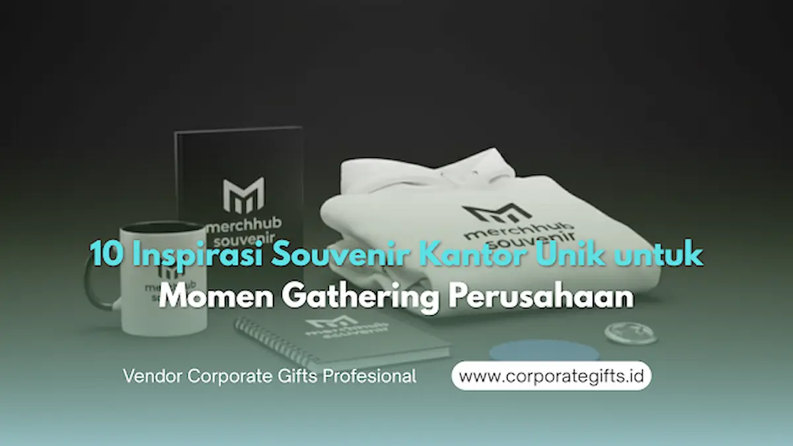

Corporate Gifts ID - Acara gathering perusahaan bukan hanya ajang hiburan dan rekreasi semata, tetapi juga momen strategis untuk membangun kekompakan tim, mempererat relasi antar karyawan, dan menyelaraskan visi korporat. Di tengah suasana kebersamaan tersebut, pemberian souvenir kantor unik memegang peranan kunci dalam menciptakan kesan mendalam yang terus dikenang oleh seluruh peserta.
Poin Kunci Pemilihan Souvenir Gathering Kantor:
- Fungsi Harian: Produk yang bermanfaat dalam rutinitas kerja sehari-hari (seperti tumbler, gadget, dan organizer) memiliki daya simpan (retention rate) paling tinggi.
- Branding Elegan: Penempatan logo dan warna korporat yang proporsional menumbuhkan kebanggaan profesional (sense of belonging) tanpa terkesan kaku.
- Efisiensi Anggaran: Pemesanan paket bundling langsung dari vendor produsen tangan pertama menghemat biaya pengadaan B2B secara signifikan.
Banyak manajemen human resource (HR) dan panitia acara kini mulai menyadari bahwa merchandise gathering yang generik sering kali berakhir menumpuk di laci. Oleh karena itu, memilih souvenir yang kreatif, fungsional, dan berkualitas tinggi adalah langkah cerdas untuk memperkuat citra positif perusahaan di hadapan karyawan maupun mitra bisnis.
Pentingnya Souvenir Kantor Unik dalam Acara Gathering
Gathering perusahaan menjadi wadah pelepas penat sekaligus sarana memperkuat keterikatan emosional antar staf. Souvenir yang dibagikan pada momentum ini berfungsi sebagai jangkar memori (memory anchor) yang mengingatkan karyawan pada pengalaman positif bersama rekan sejawat.
Ketika karyawan menerima merchandise yang dirancang secara matang, mereka merasa dihargai atas kontribusi kerja keras yang telah diberikan. Hal ini berkontribusi langsung pada peningkatan motivasi kerja dan loyalitas jangka panjang.
10 Inspirasi Souvenir Gathering Kantor yang Fungsional & Menarik
Berikut adalah sepuluh rekomendasi souvenir kantor terbaik yang dapat Anda sesuaikan dengan tema acara, profil peserta, dan anggaran perusahaan:
1. Tumbler Custom dengan Grafir Logo Perusahaan
Tumbler stainless steel tahan panas dan dingin tetap menjadi pilihan favorit nomor satu. Selain sangat fungsional untuk kebutuhan hidrasi di meja kerja, produk ini mendukung inisiatif go green korporat untuk mengurangi penggunaan botol plastik sekali pakai. Grafir laser logo perusahaan memberikan sentuhan modern dan eksklusif.
2. Gift Set Premium (Notebook & Metal Pen)
Untuk gathering bertema kepemimpinan atau acara tahunan formal, paket gift set souvenir custom yang memadukan buku agenda bersampul kulit sintetis (PU Leather), pulpen metal berlogo, dan gantungan kunci elegan adalah opsi hadiah yang prestisius.
3. Smart Mug atau Botol Pintar LED Temperatur
Teknologi digital yang dipadukan ke dalam perkakas minum menghadirkan kesan futuristik. Smart mug dengan sensor temperatur LED di bagian tutup menunjukkan bahwa perusahaan Anda dinamis, modern, dan memperhatikan kenyamanan gaya hidup karyawan.
4. Tas Serbaguna Premium (Tote Bag Kulit / Laptop Backpack)
Souvenir berupa tas jinjing kanvas tebal, tas laptop water-resistant, atau tote bag kulit sintetis memberikan utilitas mobilitas yang tinggi. Karyawan dapat menggunakannya saat dinas luar kota, menghadiri pelatihan, maupun kebutuhan komuter harian.

Pilihan paket souvenir kantor eksklusif dan merchandise ramah lingkungan untuk meningkatkan engagement peserta gathering.
5. Wireless Charger Pad Custom Logo
Di era kerja hybrid, perangkat wireless fast charging pad dengan permukaan akrilik berlampu LED atau bahan kayu bambu natural sangat digemari. Souvenir teknologi ini membuat meja kerja tetap rapi tanpa keruwetan kabel charger.
6. Planner Book & Jurnal Produktivitas Eksklusif
Buku perencana tahunan (planner) yang dilengkapi kalender kerja, lembar pencatatan target (KPI tracker), dan kutipan motivasi korporat sangat tepat untuk gathering awal tahun atau kick-off meeting.
7. Kaos Poloshirt atau Hoodie Custom Gathering
Untuk gathering bertema outbound, family gathering, atau team building di alam terbuka, seragam kaos katun combed premium atau jaket hoodie dengan sablon grafis tematis langsung menyatukan identitas visual tim di lokasi kegiatan.
8. Produk Ramah Lingkungan (Eco-Friendly Utensil Set)
Set alat makan berbahan jerami gandum (wheat straw) atau kayu bambu alami yang dikemas dalam pouch serut kanvas menunjukkan komitmen nyata perusahaan terhadap prinsip keberlanjutan dan environmental, social, and governance (ESG).
9. Desk Organizer Kayu Minimalis
Tempat penyimpanan alat tulis multifungsi yang dilengkapi dudukan ponsel (phone stand) berbahan kayu mahoni atau pinus solid menambah estetika meja kerja sekaligus menjaga kerapian ruang kerja staf.
10. Mini Succulent Desk Plant
Tanaman sukulen mini dalam pot keramik berstiker logo acara gathering menghadirkan nuansa hijau yang menyegarkan mata di tengah padatnya aktivitas komputasi harian di kantor.
Tabel Perbandingan Ide Souvenir Gathering Kantor
Gunakan tabel matriks di bawah ini untuk mempermudah pemilihan souvenir berdasarkan karakteristik, estimasi budget, dan format acara gathering:
| No | Kategori Souvenir | Fitur Utama & Karakteristik | Estimasi Budget (Grosir) | Format Acara Rekomendasi |
|---|---|---|---|---|
| 1 | Tumbler Stainless Steel | Tahan panas/dingin 8-12 jam, grafir laser awet | Rp35.000 - Rp85.000 | Indoor & Outdoor Gathering |
| 2 | Executive Gift Set | Notebook PU leather + pulpen metal + hardbox | Rp85.000 - Rp200.000 | Gala Dinner & Annual Meeting |
| 3 | Smart Mug LED | Display suhu digital, desain ergonomis | Rp45.000 - Rp95.000 | Gathering Divisi Tech & Finansial |
| 4 | Wireless Charger Pad | Fast charge 15W, cetak UV logo full color | Rp65.000 - Rp135.000 | Corporate Milestone & Gathering |
| 5 | Eco-Friendly Kit | Set alat makan bambu + pouch kanvas custom | Rp25.000 - Rp55.000 | Family Gathering & CSR Event |
Membangun Semangat dan Loyalitas Karyawan Lewat Hadiah Spesial
Souvenir bukan sekadar barang pelengkap yang dibagikan secara seremonial. Jika dipilih dengan tepat, produk ini dapat berfungsi sebagai katalisator untuk meningkatkan kepuasan kerja dan employee engagement.
Karyawan yang merasa diperhatikan melalui cinderamata yang dipersonalisasi cenderung memiliki ikatan psikologis yang lebih kuat terhadap perusahaan. Hadiah yang dibagikan pada momen kebersamaan menjadi bukti nyata bahwa perusahaan menghargai kehadiran dan kerja keras setiap anggota tim.
Strategi Menyesuaikan Souvenir dengan Anggaran Perusahaan
Setiap divisi panitia tentu memiliki batasan anggaran (budget allocation) yang berbeda. Namun, keterbatasan dana bukan alasan untuk mengorbankan kualitas cinderamata. Beberapa langkah efisiensi cerdas antara lain:
- Lakukan Pemesanan Grosir (Bulk Order): Jumlah pesanan yang lebih tinggi memberikan harga satuan jauh lebih ekonomis.
- Pilih Paket Bundling Siap Pakai: Vendor penyedia paket seminar kit dan merchandise biasanya memberikan potongan harga khusus untuk pembelian satu set lengkap.
- Pilih Teknik Branding yang Efisien: Sablon satu warna atau grafir laser sering kali lebih hemat biaya dibandingkan full print UV pada material tertentu.
Tips Memilih Vendor dan Souvenir Gathering yang Tepat
Agar pengadaan souvenir gathering berjalan lancar tanpa kendala keterlambatan produksi, pastikan Anda memperhatikan poin-poin berikut:
- Sesuaikan dengan Tema & Tempat: Acara outdoor membutuhkan souvenir yang tahan cuaca, sedangkan acara ballroom menuntut kemasan elegan.
- Utamakan Kualitas Material: Pastikan material produk bebas cacat dan memiliki daya tahan pemakaian jangka panjang.
- Cek Contoh Fisik (Mockup / Sample Proofing): Mintalah sample digital atau proofing fisik dari vendor sebelum proses produksi massal dijalankan.
- Pilih Vendor B2B Berpengalaman: Pastikan vendor memiliki rekam jejak legalitas resmi, invoice pajak transparan, dan garansi pengiriman tepat waktu.
Kesimpulan
Menentukan souvenir kantor unik untuk gathering perusahaan merupakan investasi strategis dalam membangun kekompakan tim dan memperkuat identitas merek korporat. Dengan memadukan kreativitas desain, fungsi harian yang tinggi, serta pengemasan yang eksklusif, setiap cinderamata yang Anda berikan akan menjadi kenang-kenangan yang berharga bagi seluruh karyawan.
Jika Anda membutuhkan panduan konsultasi atau ingin melihat koleksi lengkap cinderamata kantor, silakan pelajari E-Katalog Resmi CorporateGifts.ID atau langsung hubungi tim representatif kami untuk penawaran harga khusus instansi Anda.